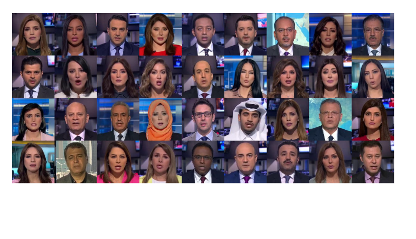
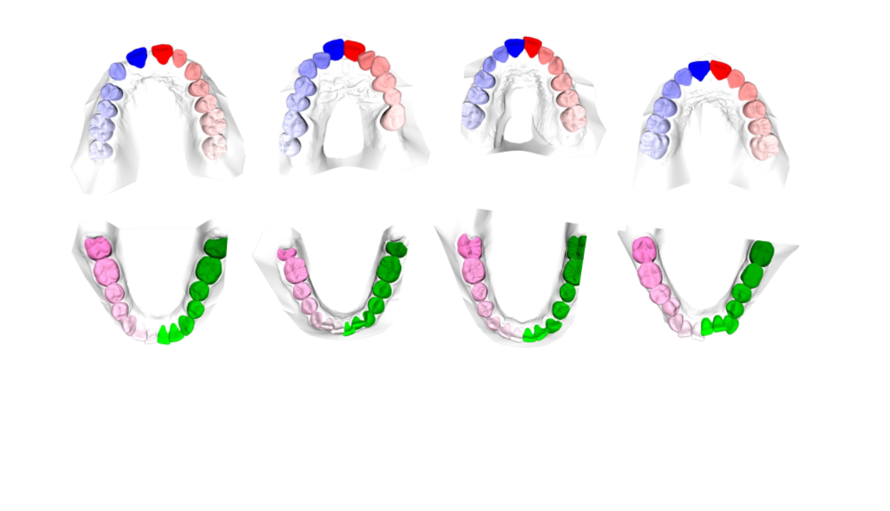
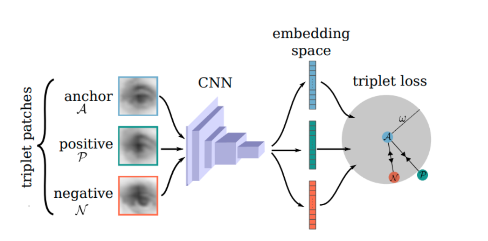

Publications
Selected publication list, highlighting recent work in medical imaging, lip reading, and 3D vision.
Selected papers
A curated list of recent and foundational publications from the SmartVision team.





